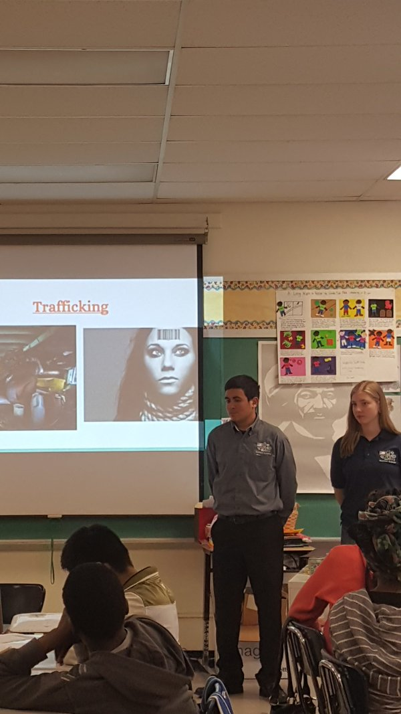
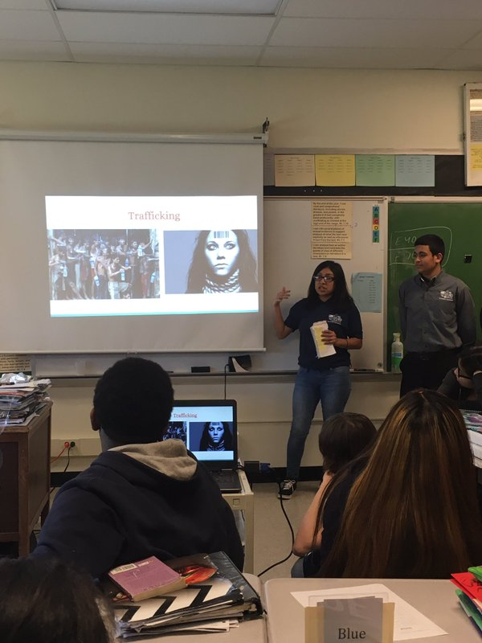

I am the co-founder of the robotics club at Excelsior Academy. I was vice-President for the two years I was in the club. Starting off as a rookie team and starting late, preparing for the annual robotics competition was difficult. As a team we rigorously worked to make sure we had everything appropriately in place to compete in the competition. As a leader, I was presented with setting a clear vision for the members of the club, motivating and guiding members to a common goal.
As a school we were split into a few groups each tasked with different activities to inform the public of modern day slavery. I was chosen to be one of the project managers for our group of about 15. Choosing to make a website using HTML/CSS was a difficult task we were excited to take on. As one of the leaders, I realized the importance in effective communication. This essential component was lost during the few month long project. Rushing to tie everything in place towards the end made the project ever-more challenging. Reflecting on this experience later on taught me the importance of effective communication.
Website can be found at Quit Slavery
I am part of the student advisory board for The Global To Local club at Excelsior Academy. As a club we are dedicated in serving the community of Newburgh to better help it thrive as a whole. We plan to go to Quito Ecuador in the summer of 2017 to volunteer at an afterschool program assisting children. Hoping to learn different skills while there, we plan to apply them in Newburgh leading projects addressing problems in Newburgh. We are currently involved in fundraising for the trip and strengthening our voice to the public.
Our information page can be found at Global To Local
I am one of the founders of the Excelsior Awareness committee at Excelsior Academy.This committee stems from our interest to inform the public about modern day slavery. To continue our efforts, we decided to set out to different middle schools informing them about the topic and how they can help, even at a young age.
 Opening a new program at the community center teaching students grades 2-8 about computer science drew attention to fellow colleagues interested in teaching at the program. I competed for 1 of 8 openings against 20 fellow peers and was awarded one of the jobs at the center. There, we teach different computer science platforms including Scratch, Dash and Dots, and Lego Mindstorms.
Our informative website can be found at Newburgh Armory
I currently own and run my own Lawn Mowing Service in New Windsor Ny managing several different accounts.. Put more